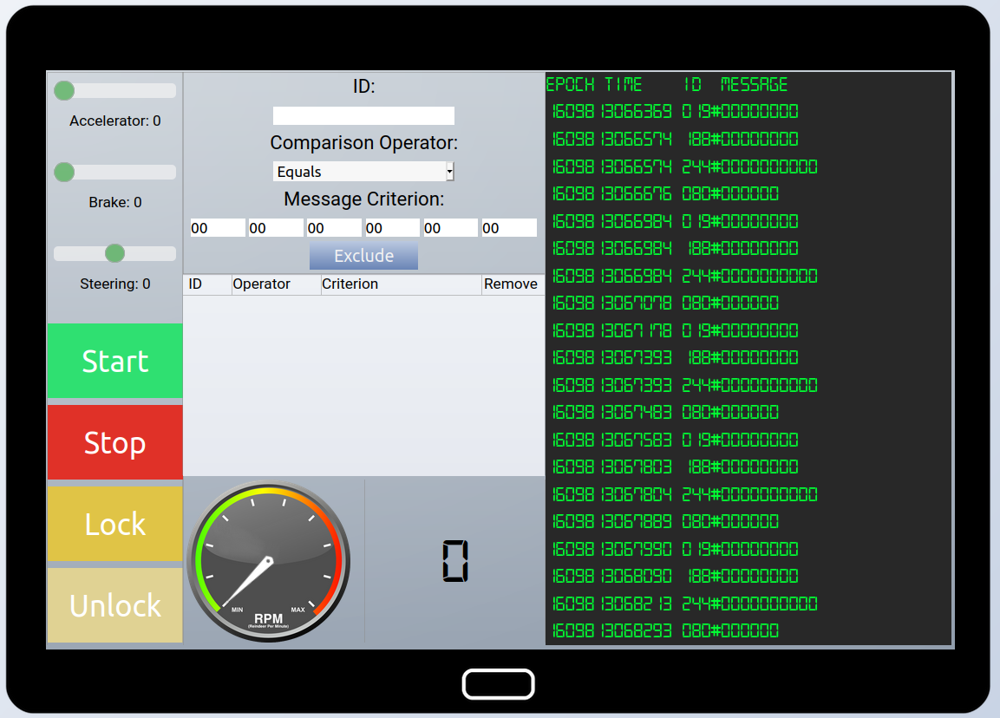
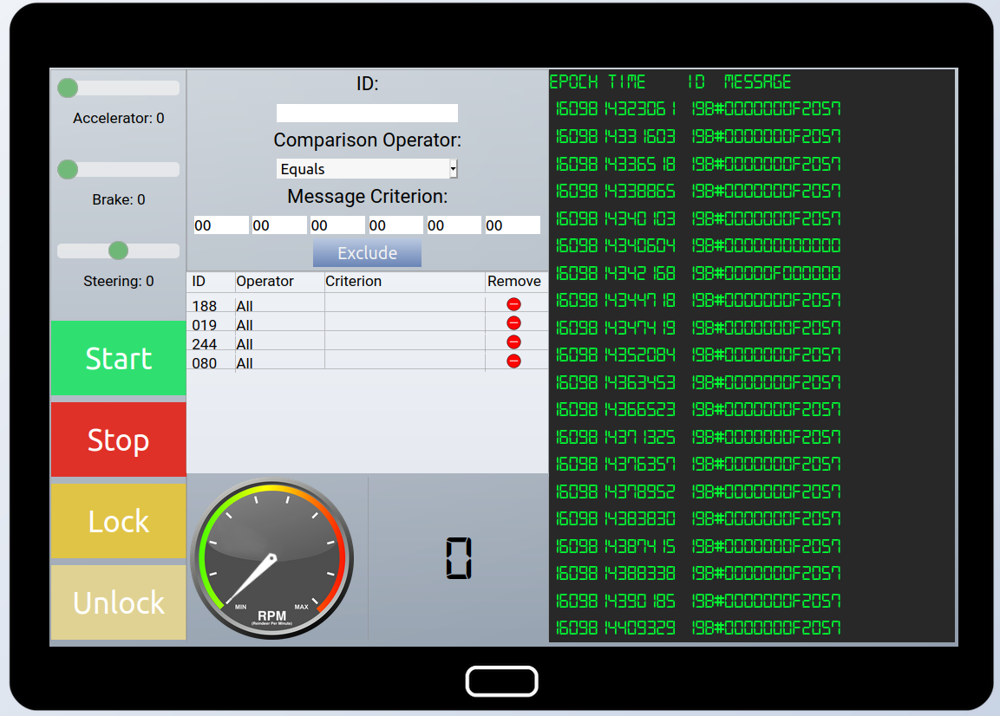
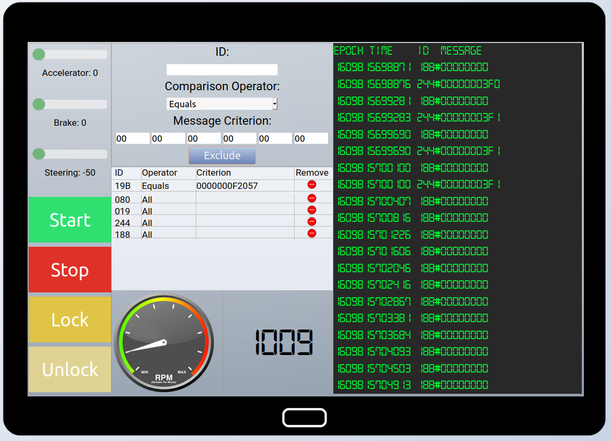
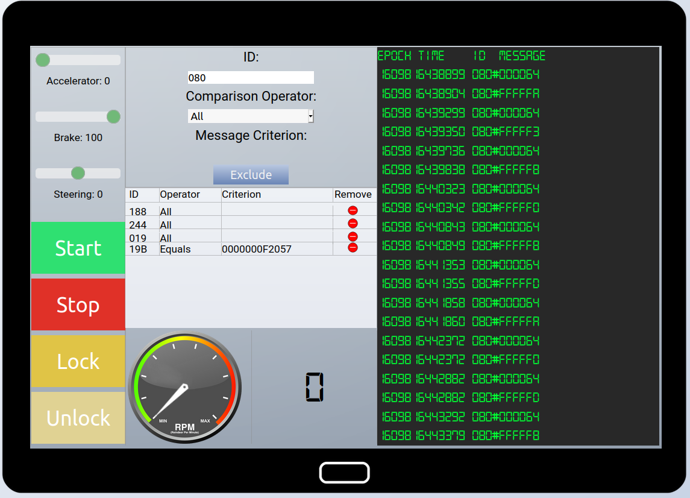

Solve the Sleigh's CAN-D-BUS Problem#
So, Santa suspects The Lollipop Gang is attacking his infrastructure, and that his sleigh appears to have been hacked. Coincidence, or the work of the same attackers?
Objective#
Jack Frost is somehow inserting malicious messages onto the sleigh's CAN-D bus. We need you to exclude the malicious messages and no others to fix the sleigh. Visit the NetWars room on the roof and talk to Wunorse Openslae for hints.
Difficulty: 3/5
Wunorse Openslae's dialog:#
Say, do you have any thoughts on what might fix Santa's sleigh?
Turns out: Santa's sleigh uses a variation of CAN bus that we call CAN-D bus.
And there's something naughty going on in that CAN-D bus.
The brakes seem to shudder when I put some pressure on them, and the doors are acting oddly.
I'm pretty sure we need to filter out naughty CAN-D-ID codes.
There might even be some valid IDs with invalid data bytes.
For security reasons, only Santa is allowed access to the sled and its CAN-D bus.
I'll hit him up next time he's nearby.Hey Santa!
Those tweaks you made to the sled just don’t seem right to me.
I can’t figure out what’s wrong, but maybe you can check it out to fix it.
Hints#
Chris Elgee is talking about how CAN traffic works right now!
Solution#
Note
It's helpful to complete the CAN-BUS Investigation terminal before attempting this objective.
CAN Bus is a communication bus designed to allow vehicle microcontrollers and computers to communicate without using a host computer. Devices on the bus communicate via messages that are received by every device on the bus. A rogue or misconfigured device on the bus can cause a vehicle to malfunction. Someone is inserting malicuous messages on the CAN-D bus on Santa's sleigh. From Wunorse's dialog, it appears we need to fix 3 things:
- The brakes shudder when applied.
- The doors are acting oddly.
- Some valid IDs have invalid data.
Using the interface to the CAN-D Bus in the sleigh, we can see the current traffic on the bus. We can simulate the major functions on the sleigh: starting & stopping the engine, locking & locking the doors, and applying the accelerator & brakes.

A good starting point is to filter out the "noisy" traffic that's making it difficult to find the malicious messages:

By process of elimination, we can determinations on what IDs correspond to what function:
080: Brakes188: Tachometer (RPM gauge)019: Steering244: Accelerator pedal19B: Locking mechanism (Lock/Unlock)
Filtering out all traffic from IDs 188, 019, 244, and 080 eliminates all the noisy traffic, and allows us to see that there are messages from ID 19B. There appear to be malicious messages on the bus with ID 19B, so can apply a filter to exclude those messages: ID = 19B:0000000F2057.

Removing the filter for ID 080 will allow us to look at the oddly-acting brakes. Applying the brakes to 100, we can see messages of 080:000064 (100 in base 10), but also some errant messages with ID 080 but values > FFFFF0.

We can apply a filter for ID 080, values containing FFFFF to eliminate the misbehaving brakes. This last filter fixes Santa's sleigh and solves the objective.

Answer#
Correctly filter the CAN-D Bus traffic to eliminate the problems with the sleigh.